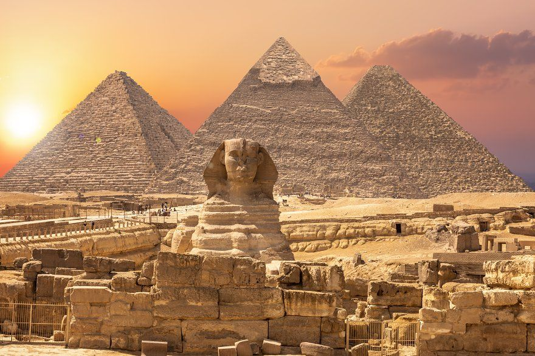
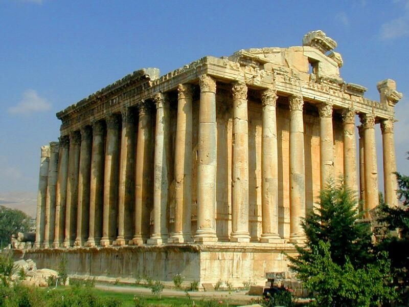
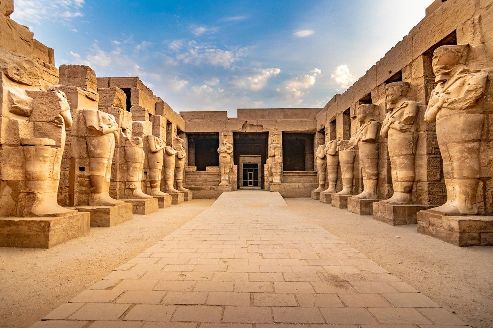
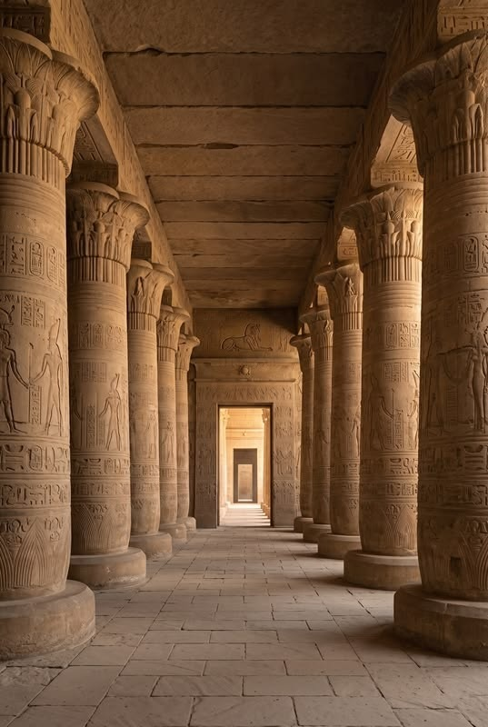

The Old Kingdom was known as the “Age of the Pyramids,” when pharaohs ruled with absolute power and massive royal tombs were built. This period produced some of Egypt’s most famous monuments, including the Great Pyramid of Giza and the Great Sphinx of Giza, showing remarkable engineering skill.

The Middle Kingdom restored political stability and strengthened the administration of Egypt. Important religious centers such as Heliopolis flourished during this time. Temples and statues became more refined, and tombs were decorated with detailed scenes of daily life and religious beliefs.

The New Kingdom was Egypt’s most powerful and wealthy era, ruled by famous pharaohs like Tutankhamun. During this time, great monuments such as Karnak Temple were built. Karnak, dedicated to Amun-Ra, is famous for its massive columns and grand halls, showing the strength and architectural genius of ancient Egypt.

The Late Period was the final stage of native Egyptian rule before foreign conquest, marked by a revival of traditional art and architecture. Philae Temple is a key temple of this era, dedicated to Isis and reflecting the blend of traditional Egyptian design with later influences while preserving cultural identity.